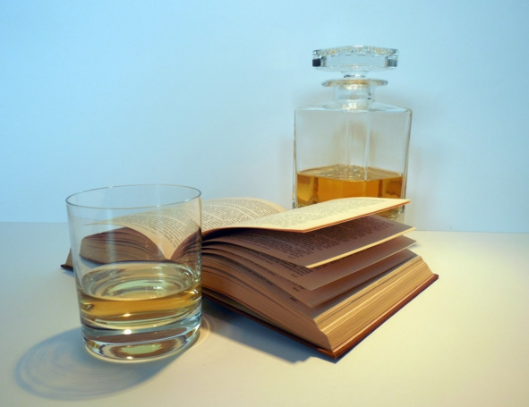
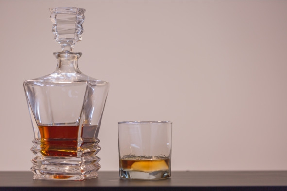
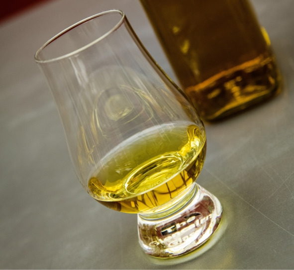
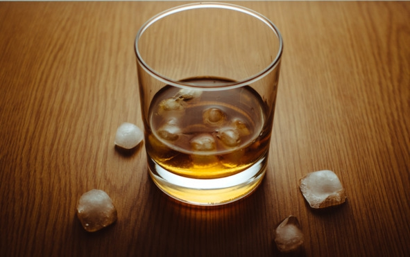
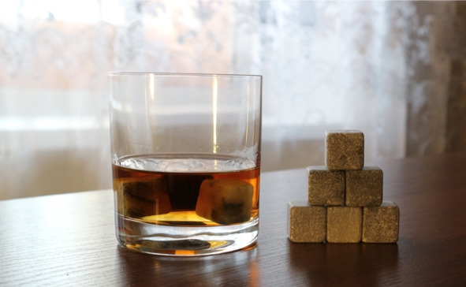

О культуре пития .. Как пить виски.. .


Зачастую культуру употребления виски формируют голливудские фильмы, в которых напиток смешивают с колой, содовой или льдом. С телевизионных экранов эти методы перекочевали в бары, рестораны и наши дома, став нормой. На самом деле добавлять лед, разбавлять содовой и смешивать с колой можно лишь виски невысокого качества, ароматический букет и вкус которых не представляют ценности. Хороший же виски пьют в чистом виде.
Температура
Перед употреблением виски следует охладить до +18—20° C. Более теплый напиток сильно разит спиртом, а при температуре ниже 18° C не чувствуется аромат даже самого лучшего виски.
Бокалы
Бокалы для виски бывают следующих видов:
– Тумблер (tumbler) – бокал емкостью 200 мл с прямыми стенками и толстым дном. Благодаря высокой прочности часто используется в барах и ресторанах для подачи алкогольных коктейлей и виски в чистом виде. Тумблер подходит лишь для дегустации простых сортов виски, поскольку его геометрическая форма не позволяет уловить нотки более утонченных напитков с длительной выдержкой.

Тумблер
– Рокс (rocks) – бокал емкостью 250 мл, используемый барменами для быстрой подачи. Рокс часто называют упрощенным вариантом тумблера, он тоже имеет толстое дно и прямые стенки. Бокалы типа рокс подходят для подачи виски со льдом и простых напитков без утонченного ароматического букета. Для дегустатора нет разницы между тумблером и роксом. Но рокс удобнее для барменов, в него можно быстрее добавить лед и налить порцию напитка. Рокс – отличный выбор для недорогих купажированных сортов виски. Еще он идеально подходит для бурбона.

Рокс
– Тюльпан (tulip) – вид бокала объемом 100—140 мл, использующийся для дегустации практически любых сортов среднего и премиум-сегментов. Геометрическая форма тюльпана с расширенным основанием и зауженным верхом позволяет уловить малейшие нотки запаха. Раньше бокал этого типа считался профессиональным, его было сложно найти в продаже. Теперь тюльпаны продаются повсеместно, они подходят для дегустации любого элитного алкоголя, начиная от вина и заканчивая коньяком.

Тюльпан
В идеале ценитель виски должен иметь все три типа бокалов и пользоваться каждым из них по мере надобности.
Процесс подачи и дегустации
Ирландцы категорически не приемлют разбавления виски водой, а шотландцы не привыкли закусывать свой скотч.
В мужской компании виски разливает хозяин или каждый гость наливает себе сам. Для нормального восприятия гаммы напитка бокал наполняют максимум на треть. Если в обществе есть дамы, за их бокалами следит мужчина.
Шотландцы пользуются правилом пяти S:
– Sight (любоваться) – оценить цвет;
– Smell (вдыхать) – почувствовать запах;
– Swish (смаковать) – пригубить и почувствовать вкус;
– Swallow (проглотить) – сделать первый глоток;
– Splash (разбавить) – разбавить водой для полного раскрытия вкуса и аромата, элитные напитки не разбавляют.
Закуска
Первыми начали закусывать виски ирландцы. Они, в отличие от шотландцев, не считают это кощунством, поэтому пьют виски с устрицами, семгой, копченым лососем, запеченным мясом и дичью. В Ирландии считают, что лучше пить виски с закуской, чем разбавлять его другими напитками, портящими вкус.
Опытные кулинары советуют подбирать закуску к виски, исходя из сорта напитка. Очень сложно найти блюда, подходящие к любому сорту:
– виски с дымным или фруктовым ароматом и острым вкусом лучше закусывать дичью и говяжьим языком. Также эти блюда хорошо сочетаются с шотландскими односолодовыми виски;
– мягкие сорта закусывают копченой рыбой;
– к виски с травяным ароматом подают любые блюда из морепродуктов;
– сорта, имеющие дымно-торфяной аромат, можно закусывать хорошо прожаренной говядиной или бараниной.
Виски со льдом
Со льдом пьют только дешевый виски. Если напиток не может похвастаться изысканным букетом, ему нечего терять кроме чрезмерной крепости, а иногда и неприятного привкуса. Эти недостатки помогает скрыть лед – появившаяся при таянии вода снижает крепость, а охлаждение смягчает вкус и сглаживает «спиртовой» аромат, позволяя букету хоть как-то раскрыться. Согласно легенде, традицию добавлять лед в виски придумали бармены – так можно не долить клиенту спиртное, но визуально объем порции не изменится.

Советы:
– размер кубиков имеет значение: ледяные «чипсы» быстрее тают и сильнее разбавляют напиток, в то время как крупные кусочки льда просто охлаждают виски, минимально влияя на вкус;
– нельзя использовать старый лед, замороженный несколько месяцев назад, он впитывает ароматы;
– для кубиков нужна качественная вода – например, негазированная минералка.
Камни для виски вместо льда
При таянии лед разбавляет виски водой, ухудшая вкус. Это проблему решил Эндрю Хеллман, он предложил заменить лед отшлифованными каменными кубиками. Позже их стали называть «камнями для виски» (Whisky Stones).
Сделанные из безопасного материала стеатита (мыльного камня), камни для виски прекрасно аккумулируют холод или тепло, не влияя на вкус. Виски остается холодным 25—30 минут. Залежи стеатита есть только в США (штат Вермонт) и Скандинавии. После добычи материал подвергают ручной полировке. Камешки получаются гладкими и не царапают стекло бокалов. Скандинавские народы используют стеатит для изготовления посуды, приписывая материалу целебные свойства.

Камни охлаждают виски, но не влияют на вкус
Перед первым использованием камни хорошо моют губкой в теплой воде, чтобы избавиться от остатков пыли. За 2—3 часа до начала вечеринки их охлаждают в морозильной камере. На одну порцию 50—70 мл достаточно положить в бокал 3—4 камня. После применения камни рекомендуется сполоснуть холодной водой и положить обратно в чехол. При соблюдении этих условий они прослужат многие годы. Еще камни для виски – отличное средство для поддержания температуры горячих напитков, например, кофе или чая. Достаточно положить их в микроволновую печь на 30 секунд, затем добавить 2—3 штуки в чашку с напитком.
При выборе камней для виски нужно обратить внимание на материал, из которого они сделаны. В продаже появились дешевые китайские аналоги из гранита, замаскированные под стеатит. Из-за пористой структуры гранит впитывает запахи, ухудшая органолептические свойства виски.
Чем разбавить виски
Водой. Для самых дорогих сортов достаточно всего несколько капель чистой родниковой воды (оптимально – той же, на основе которой изготовлен дегустируемый виски), для раскрытия букета. Более дешевые виды можно разбавлять газировкой. Температура воды – комнатная, пропорции на вкус, максимум – 50 на 50.
Соками. Получаются в меру крепкие напитки с интересным фруктовым привкусом. Неплохой вариант для вечеринки или дискотеки. Можно разбавлять виски любым холодным соком. Самые популярные: яблочный, вишневый, лимонный, апельсиновый, виноградный и ананасовый. На одну часть виски добавляют от одной до пяти частей сока.
Колой, содовой, другими газировками. Американский метод, благодаря которому можно полностью заглушить вкус спиртного. Используется, когда нужно замаскировать горечь дешевых сортов, сделать сладкий слабоалкогольный коктейль или просто напиться. В классическом варианте колу смешивают с виски в равных частях, содовую и «Спрайт» – в пропорции 1:2 (одна часть содовой к двум частям виски).
Кофе и чаем. Хороший вариант в холодное время года. Можно добавить 2—3 столовые ложки виски в чашку или смешать напитки в других пропорциях (безалкогольного компонента должно быть в 2—3 раза больше).
Молоком. Спорное сочетание, вызывающее восторг у одних и рвотные позывы у других. Готовить виски с молоком лучше в виде коктейлей, добавляя другие ингредиенты, например, мед, корицу, мускатный орех.
Что такое двойной виски
Логично предположить, что так называется двойная порция, вопрос в другом – сколько это будет в миллилитрах. Все зависит от бара или хозяина дома, но исторически сложилось, что стандартной мерой считаются полторы унции, то есть 45 мл. Соответственно, двойной виски – это 90 мл. В ресторанах значение могут и округлить до 100 мл.
Традиция появилась в американских барах, но жесткой корреляции нет: двойная порция выгоднее и удобнее, особенно если вечер планируется долгим, и это никак не зависит от страны.